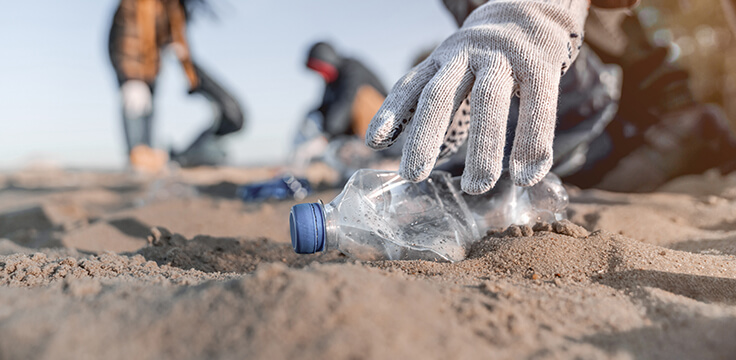

Spiagge pulite, futuro più verde
Un'azione collettiva per proteggere il nostro litorale
Plastica, rifiuti abbandonati, inquinamento costiero: le nostre spiagge sono in prima linea contro il degrado ambientale. Attraverso giornate di pulizia organizzate e partecipate, trasformiamo la preoccupazione in azione concreta, coinvolgendo chiunque voglia contribuire a un cambiamento reale e visibile.